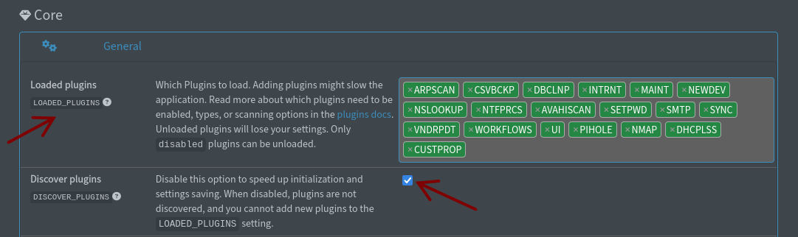

üîå Plugins
NetAlertX supports additional plugins to extend its functionality, each with its own settings and options. Plugins can be loaded via the General -> LOADED_PLUGINS setting. For custom plugin development, refer to the Plugin development guide.
Note
Please check this Plugins debugging guide and the corresponding Plugin documentation in the below table if you are facing issues.
⚡ Quick start
Tip
You can load additional Plugins via the General -> LOADED_PLUGINS setting. You need to save the settings for the new plugins to load (cache/page reload may be necessary).

- Pick your
üîç dev scannerplugin (e.g.ARPSCANorNMAPDEV), or import devices into the application with anüì• importerplugin. (See Enabling plugins below) - Pick a
‚ñ∂Ô∏è publisherplugin, if you want to send notifications. If you don't see a publisher you'd like to use, look at the üìö_publisher_apprise plugin which is a proxy for over 80 notification services. - Setup your Network topology diagram
- Fine-tune Notifications
- Setup Workflows
- Backup your setup
- Contribute and Create custom plugins
Plugin types
| Plugin type | Icon | Description | When to run | Required | Data source ? |
|---|---|---|---|---|---|
| publisher | ▶️ | Sending notifications to services. | on_notification |
✖ | Script |
| dev scanner | üîç | Create devices in the app, manages online/offline device status. | schedule |
✖ | Script / SQLite DB |
| name discovery | üÜé | Discovers names of devices via various protocols. | before_name_updates, schedule |
✖ | Script |
| importer | üì• | Importing devices from another service. | schedule |
✖ | Script / SQLite DB |
| system | ⚙ | Providing core system functionality. | schedule / always on |
✖/✔ | Script / Template |
| other | ♻ | Other plugins | misc | ✖ | Script / Template |
Features
| Icon | Description |
|---|---|
| üñß | Auto-imports the network topology diagram |
| üîÑ | Has the option to sync some data back into the plugin source |
Available Plugins
Device-detecting plugins insert values into the CurrentScan database table. The plugins that are not required are safe to ignore, however, it makes sense to have at least some device-detecting plugins enabled, such as ARPSCAN or NMAPDEV.
| ID | Type | Description | Features | Required | Data source | Detailed docs |
|---|---|---|---|---|---|---|
APPRISE |
▶️ | Apprise notification proxy | Script | _publisher_apprise | ||
ARPSCAN |
üîç | ARP-scan on current network | Script | arp_scan | ||
AVAHISCAN |
üÜé | Avahi (mDNS-based) name resolution | Script | avahi_scan | ||
ASUSWRT |
üîç | Import connected devices from AsusWRT | Script | asuswrt_import | ||
CSVBCKP |
⚙ | CSV devices backup | Script | csv_backup | ||
CUSTPROP |
⚙ | Managing custom device properties values | Yes | Template | custom_props | |
DBCLNP |
⚙ | Database cleanup | Yes* | Script | db_cleanup | |
DDNS |
⚙ | DDNS update | Script | ddns_update | ||
DHCPLSS |
üîç/üì•/üÜé | Import devices from DHCP leases | Script | dhcp_leases | ||
DHCPSRVS |
♻ | DHCP servers | Script | dhcp_servers | ||
DIGSCAN |
üÜé | Dig (DNS) Name resolution | Script | dig_scan | ||
FREEBOX |
üîç/♻/üÜé | Pull data and names from Freebox/Iliadbox | Script | freebox | ||
ICMP |
♻ | ICMP (ping) status checker | Script | icmp_scan | ||
INTRNT |
üîç | Internet IP scanner | Script | internet_ip | ||
INTRSPD |
♻ | Internet speed test | Script | internet_speedtest | ||
IPNEIGH |
üîç | Scan ARP (IPv4) and NDP (IPv6) tables | Script | ipneigh | ||
LUCIRPC |
üîç | Import connected devices from OpenWRT | Script | luci_import | ||
MAINT |
⚙ | Maintenance of logs, etc. | Script | maintenance | ||
MQTT |
▶️ | MQTT for synching to Home Assistant | Script | _publisher_mqtt | ||
NBTSCAN |
üÜé | Nbtscan (NetBIOS-based) name resolution | Script | nbtscan_scan | ||
NEWDEV |
⚙ | New device template | Yes | Template | newdev_template | |
NMAP |
♻ | Nmap port scanning & discovery | Script | nmap_scan | ||
NMAPDEV |
üîç | Nmap dev scan on current network | Script | nmap_dev_scan | ||
NSLOOKUP |
üÜé | NSLookup (DNS-based) name resolution | Script | nslookup_scan | ||
NTFPRCS |
⚙ | Notification processing | Yes | Template | notification_processing | |
NTFY |
▶️ | NTFY notifications | Script | _publisher_ntfy | ||
OMDSDN |
üì•/üÜé ❌ | UNMAINTAINED use OMDSDNOPENAPI |
üñß üîÑ | Script | omada_sdn_imp | |
OMDSDNOPENAPI |
üì•/üÜé | OMADA TP-Link import via OpenAPI | üñß | Script | omada_sdn_openapi | |
PIHOLE |
üîç/üÜé/üì• | Pi-hole device import & sync | SQLite DB | pihole_scan | ||
PUSHSAFER |
▶️ | Pushsafer notifications | Script | _publisher_pushsafer | ||
PUSHOVER |
▶️ | Pushover notifications | Script | _publisher_pushover | ||
SETPWD |
⚙ | Set password | Yes | Template | set_password | |
SMTP |
▶️ | Email notifications | Script | _publisher_email | ||
SNMPDSC |
üîç/üì• | SNMP device import & sync | Script | snmp_discovery | ||
SYNC |
üîç/⚙/üì• | Sync & import from NetAlertX instances | üñß üîÑ | Yes | Script | sync |
TELEGRAM |
▶️ | Telegram notifications | Script | _publisher_telegram | ||
UI |
♻ | UI specific settings | Yes | Template | ui_settings | |
UNFIMP |
üîç/üì•/üÜé | UniFi device import & sync | üñß | Script | unifi_import | |
VNDRPDT |
⚙ | Vendor database update | Script | vendor_update | ||
WEBHOOK |
▶️ | Webhook notifications | Script | _publisher_webhook | ||
WEBMON |
♻ | Website down monitoring | Script | website_monitor | ||
WOL |
♻ | Automatic wake-on-lan | Script | wake_on_lan |
* The database cleanup plugin (
DBCLNP) is not required but the app will become unusable after a while if not executed. ❌ marked for removal/unmaintained - looking for help ⌚It's recommended to use the same schedule interval for all plugins responsible for discovering new devices.
Enabling plugins
Plugins can be enabled via Settings, and can be disabled as needed.
- Research which plugin you'd like to use, enable
DISCOVER_PLUGINSand load the required plugins in Settings via theLOADED_PLUGINSsetting. - Save the changes and review the Settings of the newly loaded plugins.
- Change the
<prefix>_RUNSetting to the recommended or custom value as per the documentation of the given setting- If using
scheduleon aüîç dev scannerplugin, make sure the schedules are the same across allüîç dev scannerplugins
- If using
Disabling, Unloading and Ignoring plugins
- Change the
<prefix>_RUNSetting todisabledif you want to disable the plugin, but keep the settings - If you want to speed up the application, you can unload the plugin by unselecting it in the
LOADED_PLUGINSsetting.- Careful, once you save the Settings Unloaded plugin settings will be lost (old
app.conffiles are kept in the/configfolder)
- Careful, once you save the Settings Unloaded plugin settings will be lost (old
- You can completely ignore plugins by placing a
ignore_pluginfile into the plugin directory. Ignored plugins won't show up in theLOADED_PLUGINSsetting.
üÜï Developing new custom plugins
If you want to develop a custom plugin, please read this Plugin development guide.